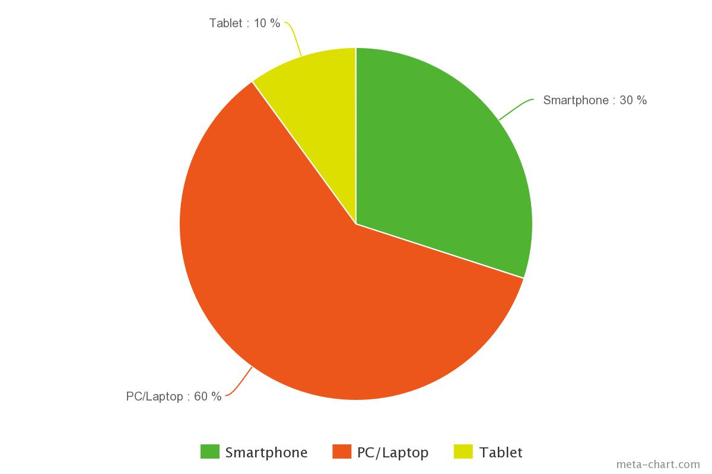
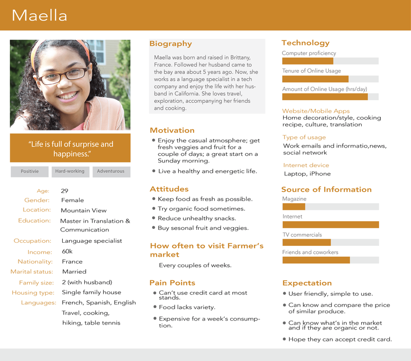

Project Farmer’s Market Website UX Design (Group project)
Role UX Designer (Homepage, Filter, Page layout, Farmer’s sign up process and account page design, Logo design)
Tools Indesign, Photoshop, Illustrator, Justinmind, Invision, Gliffy
Length 9 weeks
Freshness | Health | Lifestyle | Conflict
In America, most of farmers sell their produce in two ways: supermarket and farmer’s market. Supermarket leads in the majority of sales, while farmer’s market accounts only 10% of it. However, the number is changing in recent years, farmer’s market share is increasing, because of the change in people’s lifestyle and concept of healthy living. More and more people want fresh seasonal food, local organic food, and a variety of produce. The weekly and distant farmer’s market can not satisfy a majority of people’s needs. So, the conflict between farmers and consumers are occurring.
Primary Market Source for Fresh Produce:

Image Credit: Choices Magazine
Design Concept/Intent
Expose | Delivery | Convenience
FreshGrab intents to empower farmers by giving them the tools and means to expose their produce on the Internet; providing online ordering and shipping to customers or pick up by them; building statistics over farmers’ sales and keep track of their customers to easily stay connected with them. All the features are designed to meet farmers and customers’ needs and providing convenient to their life.
Design Process
Goals and Objectives
Our goal is to provide up-to-date, detailed and convenient fresh produce information and delivery in the US.
See more details.(PDF)
Field Study/Research
In order to know more about what farmers' needs and customers' needs, we went to Mountain View, Newark and Sunnyvale farmers' markets to interview farmers and customers. We found out:
Why people choose shop online?

What technology devices do farmers use?
Persona
I did a survey to some friends that go to farmers'market sometimes or are interested in farmers'market. According to their answers, I created a persona.
Information Architecture and Task Flows
The website aimes to benefit both farmers and customers. We design two types of login systems for farmers and customers and provide farmers' account that they can upload their produce, recipes, deals, videos, and interaction with customers. Also, for customers, they can sign in to buy fresh produce from their favorite farmers and to know more about food, cooking and planting.
Wireframe


Logo Design
I designed several logos for the websites

The final version.The team members came up with a simplified logo based on those versions.